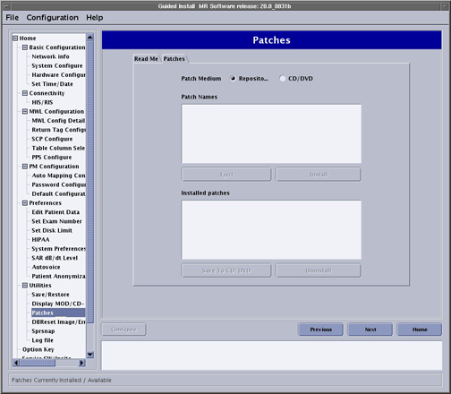

Illustration 1: Patches Tab

From this GUI you can perform the following tasks:
Review the Installed Patches section to determine the updates that have been loaded on the system disk.
Select CD/DVD to determine the updates that are on the CD/DVD.
Select Repository to determine the updates that have been downloaded to the host computer and saved in/usr/g/insite/data via InSite.
Select Patch Information to view available help files on the system, CD/DVD, or in the /usr/g/insite/data.